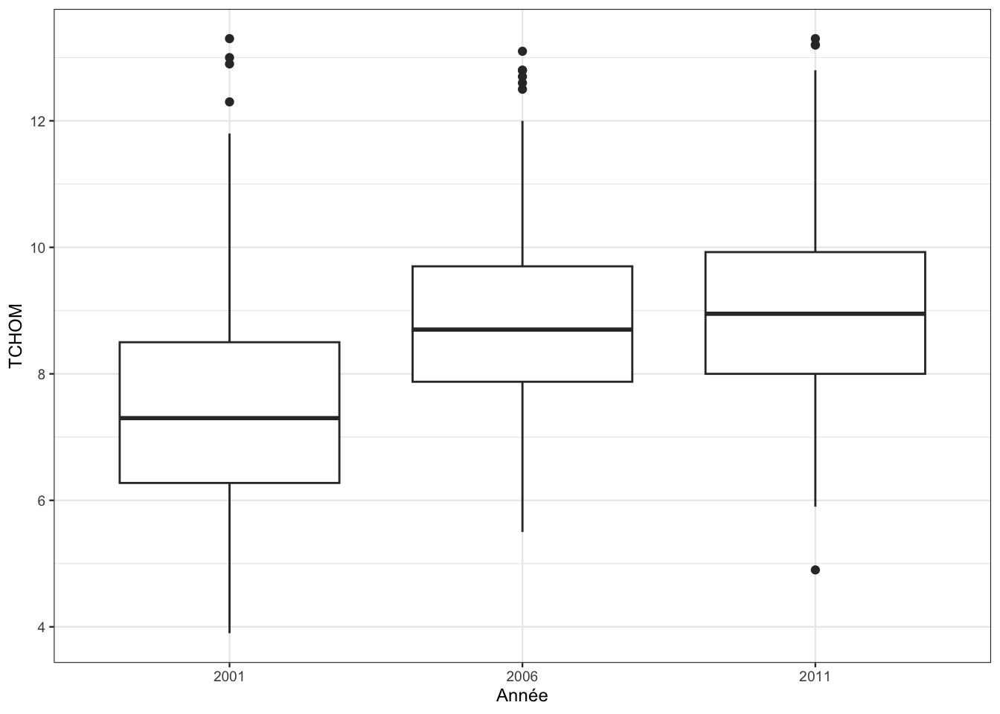

3 Manipuler les données avec dplyr
Les données sont souvent le point de départ d’une étude statistique. Elles sont généralement d’abord stockées dans des fichiers (txt, xls, csv) et une des premières étapes est d’amener ces données dans R et de les affecter à un objet de type dataframe. Il est par conséquent très important connaître et maîtriser les opérations qui permettent de réaliser ces importations. Nous présentons tout d’abord quelques fonctions qui permettent de faire ces importations avant de présenter le package dplyr qui offre une syntaxe claire pour manipuler des données (correctement importées).
3.1 Importer des données
Les fonctions read.table et read.csv sont les fonctions standards de R pour importer des données à partir de fichiers .txt ou .csv. Il est important de bien gérer le chemin du répertoire où se trouve le fichier. On peut le spécifier explicitement ou utiliser des fonctions comme file.path :
path <- file.path("data/", "piscines.csv") #premier : répertoire, deuxième : fichier
piscines <- read.csv(path)
class(piscines)[1] "data.frame"summary(piscines) Name Address Latitude Longitude
Length:20 Length:20 Min. :-27.61 Min. :152.9
Class :character Class :character 1st Qu.:-27.55 1st Qu.:153.0
Mode :character Mode :character Median :-27.49 Median :153.0
Mean :-27.49 Mean :153.0
3rd Qu.:-27.45 3rd Qu.:153.1
Max. :-27.31 Max. :153.2 Il existe plusieurs options importantes dans read.csv, notamment
- sep : le caractère de séparation (espace, virgule…)
- dec : le caractère pour le séparateur décimal (vigule, point…)
- header : logique pour indiquer si le nom des variables est spécifié à la première ligne du fichier
- row.names : vecteurs des identifiants (si besoin)
- na.strings : vecteur de caractères pour repérer les données manquantes.
- …
Le package readr du tidyverse propose d’autres fonctions comme read_csv ou read_delim. Il n’y a pas de différences énormes avec les fonctions standards, les objets créés sont des tibbles et plus des dataframes (même si les tibbles sont des dataframes…). Par exemple
library(readr)
piscines <- read_csv("data/piscines.csv")
summary(piscines) Name Address Latitude Longitude
Length:20 Length:20 Min. :-27.61 Min. :152.9
Class :character Class :character 1st Qu.:-27.55 1st Qu.:153.0
Mode :character Mode :character Median :-27.49 Median :153.0
Mean :-27.49 Mean :153.0
3rd Qu.:-27.45 3rd Qu.:153.1
Max. :-27.31 Max. :153.2 class(piscines)[1] "spec_tbl_df" "tbl_df" "tbl" "data.frame" Enfin si on n’est pas très à l’aise avec ces fonctions, on pourra utiliser le bouton Import Dataset qui se trouve dans l’onglet Environment de RStudio. Cette manière de procédé fonctionne pour des jeux de données “propres”. Si les bases contiennent trop de spécificités, on devra utiliser les fonctions présentées précédemment avec les bonnes options.
Exercice 3.1 (Premières importations avec readr) On étudie les fonctions classiques permettant d’importer des données.
Importer les données qui se trouvent dans le fichier mydata.csv. On utilisera les fonctions
read_csv,read_csv2etread_delimavec les options par défaut et on comparera les sorties.read_csv("data/mydata.csv")# A tibble: 3 × 1 `surname;height;weight;feet_size;sex` <chr> 1 tony;184;80;9.5;M 2 james;175.5;78;8.5;M 3 john;158;72;8;Mread_csv2("data/mydata.csv")# A tibble: 3 × 5 surname height weight feet_size sex <chr> <dbl> <dbl> <dbl> <chr> 1 tony 184 80 95 M 2 james 1755 78 85 M 3 john 158 72 8 Mread_delim("data/mydata.csv")# A tibble: 3 × 5 surname height weight feet_size sex <chr> <dbl> <dbl> <dbl> <chr> 1 tony 184 80 9.5 M 2 james 176. 78 8.5 M 3 john 158 72 8 Mread_csvn’utilise pas le bon séparateur par défaut,read_csv2ne lit pas correctement le symbole pour la décimale,read_delimfonctionne bien pour ce fichier (sinon il aurait fallu ajouter l’optiondelim).Importer les données qui se trouvent dans le fichier mydata2.csv.
data2 <- read_delim("data/mydata2.csv",delim=" ") data2# A tibble: 4 × 4 height weight size sex <chr> <chr> <dbl> <chr> 1 184 80 9.5 M 2 175.5 78 8.5 M 3 . 72 8 M 4 178 . 7 Fsummary(data2)height weight size sex Length:4 Length:4 Min. :7.00 Length:4 Class :character Class :character 1st Qu.:7.75 Class :character Mode :character Mode :character Median :8.25 Mode :character Mean :8.25 3rd Qu.:8.75 Max. :9.50Les variable
heightetweightsont interprétées comme des variables qualitatives, cela vient du fait qu’il y a des données manquante mal lues.Ce fichier contient des données manquantes (identifiées par un point). A l’aide de l’option na, refaire l’importation en identifiant correctement les données manquantes.
data2 <- read_delim("data/mydata2.csv",delim=" ",na=".") data2# A tibble: 4 × 4 height weight size sex <dbl> <dbl> <dbl> <chr> 1 184 80 9.5 M 2 176. 78 8.5 M 3 NA 72 8 M 4 178 NA 7 Fsummary(data2)height weight size sex Min. :175.5 Min. :72.00 Min. :7.00 Length:4 1st Qu.:176.8 1st Qu.:75.00 1st Qu.:7.75 Class :character Median :178.0 Median :78.00 Median :8.25 Mode :character Mean :179.2 Mean :76.67 Mean :8.25 3rd Qu.:181.0 3rd Qu.:79.00 3rd Qu.:8.75 Max. :184.0 Max. :80.00 Max. :9.50 NA's :1 NA's :1Changer les levels de la variable
sexen woman et man (on pourra utiliser la fonction levels).data22 <- data21ère façon :
data2$sex <- as.factor(data2$sex) levels(data2$sex) <- c("woman","man") data2# A tibble: 4 × 4 height weight size sex <dbl> <dbl> <dbl> <fct> 1 184 80 9.5 man 2 176. 78 8.5 man 3 NA 72 8 man 4 178 NA 7 woman2ème façon avec recode_factor du package
forcats:data22$sex <- recode_factor(data2$sex,"F"="woman","M"="man") data22# A tibble: 4 × 4 height weight size sex <dbl> <dbl> <dbl> <fct> 1 184 80 9.5 man 2 176. 78 8.5 man 3 NA 72 8 man 4 178 NA 7 woman
Exercice 3.2 (Importer avec read.csv) Refaire l’exercice précédent avec la fonction read.csv.
On commence avec les paramètres par défaut :
data1 <- read.csv("data/mydata.csv")
summary(data1) surname.height.weight.feet_size.sex
Length:3
Class :character
Mode :character Le séparateur n’est pas bien défini ! On corrige :
data1 <- read.csv("data/mydata.csv",sep=";",
dec=".",row.names = 1)
summary(data1) height weight feet_size sex
Min. :158.0 Min. :72.00 Min. :8.000 Length:3
1st Qu.:166.8 1st Qu.:75.00 1st Qu.:8.250 Class :character
Median :175.5 Median :78.00 Median :8.500 Mode :character
Mean :172.5 Mean :76.67 Mean :8.667
3rd Qu.:179.8 3rd Qu.:79.00 3rd Qu.:9.000
Max. :184.0 Max. :80.00 Max. :9.500 Pour le second fichier on fait :
data2 <- read.csv("data/mydata2.csv",sep="",na.strings = ".")
data2$sex <- recode_factor(data2$sex,"F"="woman","M"="man")
data2 height weight size sex
1 184.0 80 9.5 man
2 175.5 78 8.5 man
3 NA 72 8.0 man
4 178.0 NA 7.0 womansummary(data2) height weight size sex
Min. :175.5 Min. :72.00 Min. :7.00 woman:1
1st Qu.:176.8 1st Qu.:75.00 1st Qu.:7.75 man :3
Median :178.0 Median :78.00 Median :8.25
Mean :179.2 Mean :76.67 Mean :8.25
3rd Qu.:181.0 3rd Qu.:79.00 3rd Qu.:8.75
Max. :184.0 Max. :80.00 Max. :9.50
NA's :1 NA's :1 Exercice 3.3 (Jointure de tables) On considère les 3 jeux de données suivants, au format tibble :
df1 <- tibble(name=c("Mary","Peter","John","July"),age=c(18,25,21,43))
df2 <- tibble(name=c("Zac","Julian"),age=c(23,48))
df3 <- tibble(size=c(154,178,182,134,142),name1=c("Peter","Mary","July","John","stef"))
df1# A tibble: 4 × 2
name age
<chr> <dbl>
1 Mary 18
2 Peter 25
3 John 21
4 July 43df2# A tibble: 2 × 2
name age
<chr> <dbl>
1 Zac 23
2 Julian 48df3# A tibble: 5 × 2
size name1
<dbl> <chr>
1 154 Peter
2 178 Mary
3 182 July
4 134 John
5 142 stef On souhaite assembler ces tables en utilisant les fonctions de jointure du tidyverse (left_join, full_join par exemple). On pourra consulter la cheatsheet Data transformation with dplyr (help -> cheatsheets -> …).
Assembler
df1avecdf2en utilisant bind_rows et calculer la moyenne de la variableage. On appelleradfcette nouvelle table.df <- bind_rows(df1,df2) mean(df$age)[1] 29.66667Assembler
dfavecdf3en utilisant full_join.a1 <- full_join(df,df3,by=c("name"="name1")) a1# A tibble: 7 × 3 name age size <chr> <dbl> <dbl> 1 Mary 18 178 2 Peter 25 154 3 John 21 134 4 July 43 182 5 Zac 23 NA 6 Julian 48 NA 7 stef NA 142Faire la même chose avec inner_join.
a2 <- inner_join(df,df3,by=c("name"="name1")) a2# A tibble: 4 × 3 name age size <chr> <dbl> <dbl> 1 Mary 18 178 2 Peter 25 154 3 John 21 134 4 July 43 182Expliquer les différences entre full_join et inner_join.
inner_join retient uniquement les individus pour lesquels
ageetsizeont été observés. full_join garde tous les individus, des NA sont ajoutés lorsque la variable n’est pas observée.
3.2 Le package dplyr
dplyr est un package du tidyverse qui permet de faciliter la manipulation des données. Il propose une syntaxe claire (basée sur une grammaire) pour travailler sur les données. On pourra trouver des informations à cet url https://spark.rstudio.com/dplyr.html ou sur la cheatsheet.
Nous avons vu quelques opérations standards pour manipuler les données. Par exemple, on peut obtenir les Longitude et Latitude des piscines ayant une Longitude supérieure à 153 avec
piscines[piscines$Longitude>153,c("Longitude","Latitude")]# A tibble: 16 × 2
Longitude Latitude
<dbl> <dbl>
1 153. -27.6
2 153. -27.5
3 153. -27.4
4 153. -27.5
5 153. -27.5
6 153. -27.5
7 153. -27.6
8 153. -27.5
9 153. -27.5
10 153. -27.5
11 153. -27.5
12 153. -27.4
13 153. -27.6
14 153. -27.3
15 153. -27.5
16 153. -27.5dplyr propose de faire la même chose avec une syntaxe plus claire
library(tidyverse) #ou library(dplyr)
piscines |> select(Longitude,Latitude) |> filter(Longitude>153)# A tibble: 16 × 2
Longitude Latitude
<dbl> <dbl>
1 153. -27.6
2 153. -27.5
3 153. -27.4
4 153. -27.5
5 153. -27.5
6 153. -27.5
7 153. -27.6
8 153. -27.5
9 153. -27.5
10 153. -27.5
11 153. -27.5
12 153. -27.4
13 153. -27.6
14 153. -27.3
15 153. -27.5
16 153. -27.5Le code est plus efficace et facile à lire.
dplyr propose une grammaire dont les principaux verbes sont :
- select() : sélectionner des colonnes (variables)
- filter() : filtrer des lignes (individus)
- arrange() : ordonner des lignes
- mutate() : créer des nouvelles colonnes (nouvelles variables)
- summarise() : calculer des résumés numériques (ou résumés statistiques)
- group_by() : effectuer des opérations pour des groupes d’individus
Nous les présentons dans la partie suivante.
3.2.1 Les principaux verbes dplyr
Le verbe select()
Il permet de sélectionner des variables (colonnes) :
select(df, VAR1, VAR2, ...)Par exemple,
coord <- select(piscines, Latitude, Longitude)
head(piscines, n=2)# A tibble: 2 × 4
Name Address Latitude Longitude
<chr> <chr> <dbl> <dbl>
1 Acacia Ridge Leisure Centre 1391 Beaudesert Road, Acacia R… -27.6 153.
2 Bellbowrie Pool Sugarwood Street, Bellbowrie -27.6 153.head(coord, n=2)# A tibble: 2 × 2
Latitude Longitude
<dbl> <dbl>
1 -27.6 153.
2 -27.6 153.On peut utiliser les helper functions (begins_with, end_with, contains, matches) pour des sélections plus précises basées sur le nom des variables.
coord <- select(piscines, ends_with("tude"))
head(coord, n=2)# A tibble: 2 × 2
Latitude Longitude
<dbl> <dbl>
1 -27.6 153.
2 -27.6 153.Le verbe mutate()
Il permet de créer des nouvelles variables
mutate(df, NEW.VAR = expression(VAR1, VAR2, ...))Par exemple
df <- mutate(piscines, phrase=paste("Swimming pool", Name, "is located at the address", Address))
select(df,phrase)# A tibble: 20 × 1
phrase
<chr>
1 Swimming pool Acacia Ridge Leisure Centre is located at the address 1391 Bea…
2 Swimming pool Bellbowrie Pool is located at the address Sugarwood Street, Be…
3 Swimming pool Carole Park is located at the address Cnr Boundary Road and Wa…
4 Swimming pool Centenary Pool (inner City) is located at the address 400 Greg…
5 Swimming pool Chermside Pool is located at the address 375 Hamilton Road, Ch…
6 Swimming pool Colmslie Pool (Morningside) is located at the address 400 Lytt…
7 Swimming pool Spring Hill Baths (inner City) is located at the address 14 To…
8 Swimming pool Dunlop Park Pool (Corinda) is located at the address 794 Oxley…
9 Swimming pool Fortitude Valley Pool is located at the address 432 Wickham St…
10 Swimming pool Hibiscus Sports Complex (upper MtGravatt) is located at the ad…
11 Swimming pool Ithaca Pool ( Paddington) is located at the address 131 Caxton…
12 Swimming pool Jindalee Pool is located at the address 11 Yallambee Road, Jin…
13 Swimming pool Manly Pool is located at the address 1 Fairlead Crescent, Manly
14 Swimming pool Mt Gravatt East Aquatic Centre is located at the address Cnr w…
15 Swimming pool Musgrave Park Pool (South Brisbane) is located at the address …
16 Swimming pool Newmarket Pool is located at the address 71 Alderson Stret, Ne…
17 Swimming pool Runcorn Pool is located at the address 37 Bonemill Road, Runco…
18 Swimming pool Sandgate Pool is located at the address 231 Flinders Parade, S…
19 Swimming pool Langlands Parks Pool (Stones Corner) is located at the address…
20 Swimming pool Yeronga Park Pool is located at the address 81 School Road, Ye…On peut également créer plusieurs variables avec un seul mutate :
mutate(piscines,
phrase = paste("Swimming pool", Name, "is located at the address", Address),
unused = Longitude + Latitude
)# A tibble: 20 × 6
Name Address Latitude Longitude phrase unused
<chr> <chr> <dbl> <dbl> <chr> <dbl>
1 Acacia Ridge Leisure Centre 1391 B… -27.6 153. Swimm… 125.
2 Bellbowrie Pool Sugarw… -27.6 153. Swimm… 125.
3 Carole Park Cnr Bo… -27.6 153. Swimm… 125.
4 Centenary Pool (inner City) 400 Gr… -27.5 153. Swimm… 126.
5 Chermside Pool 375 Ha… -27.4 153. Swimm… 126.
6 Colmslie Pool (Morningside) 400 Ly… -27.5 153. Swimm… 126.
7 Spring Hill Baths (inner City) 14 Tor… -27.5 153. Swimm… 126.
8 Dunlop Park Pool (Corinda) 794 Ox… -27.5 153. Swimm… 125.
9 Fortitude Valley Pool 432 Wi… -27.5 153. Swimm… 126.
10 Hibiscus Sports Complex (upper MtGr… 90 Klu… -27.6 153. Swimm… 126.
11 Ithaca Pool ( Paddington) 131 Ca… -27.5 153. Swimm… 126.
12 Jindalee Pool 11 Yal… -27.5 153. Swimm… 125.
13 Manly Pool 1 Fair… -27.5 153. Swimm… 126.
14 Mt Gravatt East Aquatic Centre Cnr we… -27.5 153. Swimm… 126.
15 Musgrave Park Pool (South Brisbane) 100 Ed… -27.5 153. Swimm… 126.
16 Newmarket Pool 71 Ald… -27.4 153. Swimm… 126.
17 Runcorn Pool 37 Bon… -27.6 153. Swimm… 125.
18 Sandgate Pool 231 Fl… -27.3 153. Swimm… 126.
19 Langlands Parks Pool (Stones Corner) 5 Pani… -27.5 153. Swimm… 126.
20 Yeronga Park Pool 81 Sch… -27.5 153. Swimm… 125.Le verbe filter()
Il permet de sélectionner (filtrer) des individus (lignes) :
filter(df, TEST)Par exemple
p1 <- filter(piscines, Longitude>153.02)
select(p1,Longitude)# A tibble: 12 × 1
Longitude
<dbl>
1 153.
2 153.
3 153.
4 153.
5 153.
6 153.
7 153.
8 153.
9 153.
10 153.
11 153.
12 153.ou (on sélectionne les piscines dont le nom contient Pool)
df <- filter(piscines, !grepl("Pool", Name))
select(df,Name)# A tibble: 5 × 1
Name
<chr>
1 Acacia Ridge Leisure Centre
2 Carole Park
3 Spring Hill Baths (inner City)
4 Hibiscus Sports Complex (upper MtGravatt)
5 Mt Gravatt East Aquatic Centre ou (on sélectionne les piscines avec une longitude plus grande que 153.02 ou une latitude plus petite que -27.488)
p2 <- filter(piscines, Longitude>153.02 | Latitude < -27.488)
select(p2, Longitude, Latitude)# A tibble: 17 × 2
Longitude Latitude
<dbl> <dbl>
1 153. -27.6
2 153. -27.6
3 153. -27.6
4 153. -27.5
5 153. -27.4
6 153. -27.5
7 153. -27.5
8 153. -27.5
9 153. -27.5
10 153. -27.6
11 153. -27.5
12 153. -27.5
13 153. -27.5
14 153. -27.6
15 153. -27.3
16 153. -27.5
17 153. -27.5On peut également utiliser la fonction slice pour choisir des individus à partir de leurs indices :
slice(piscines,5:8)# A tibble: 4 × 4
Name Address Latitude Longitude
<chr> <chr> <dbl> <dbl>
1 Chermside Pool 375 Hamilton Road, Chermside -27.4 153.
2 Colmslie Pool (Morningside) 400 Lytton Road, Morningside -27.5 153.
3 Spring Hill Baths (inner City) 14 Torrington Street, Sprin… -27.5 153.
4 Dunlop Park Pool (Corinda) 794 Oxley Road, Corinda -27.5 153.Le verbe arrange()
Il permet d’ordonner les individus en fonction d’une variable
arrange(df, VAR) #tri croissantou
arrange(df, desc(VAR)) #tri décroissantPar exemple
arrange(piscines, Longitude)# A tibble: 20 × 4
Name Address Latitude Longitude
<chr> <chr> <dbl> <dbl>
1 Bellbowrie Pool Sugarwood Stree… -27.6 153.
2 Carole Park Cnr Boundary Ro… -27.6 153.
3 Jindalee Pool 11 Yallambee Ro… -27.5 153.
4 Dunlop Park Pool (Corinda) 794 Oxley Road,… -27.5 153.
5 Newmarket Pool 71 Alderson Str… -27.4 153.
6 Ithaca Pool ( Paddington) 131 Caxton Stre… -27.5 153.
7 Musgrave Park Pool (South Brisbane) 100 Edmonstone … -27.5 153.
8 Yeronga Park Pool 81 School Road,… -27.5 153.
9 Spring Hill Baths (inner City) 14 Torrington S… -27.5 153.
10 Centenary Pool (inner City) 400 Gregory Ter… -27.5 153.
11 Acacia Ridge Leisure Centre 1391 Beaudesert… -27.6 153.
12 Chermside Pool 375 Hamilton Ro… -27.4 153.
13 Fortitude Valley Pool 432 Wickham Str… -27.5 153.
14 Langlands Parks Pool (Stones Corner) 5 Panitya Stree… -27.5 153.
15 Sandgate Pool 231 Flinders Pa… -27.3 153.
16 Hibiscus Sports Complex (upper MtGravatt) 90 Klumpp Road,… -27.6 153.
17 Runcorn Pool 37 Bonemill Roa… -27.6 153.
18 Colmslie Pool (Morningside) 400 Lytton Road… -27.5 153.
19 Mt Gravatt East Aquatic Centre Cnr wecker Road… -27.5 153.
20 Manly Pool 1 Fairlead Cres… -27.5 153.ou
arrange(piscines, desc(Longitude))# A tibble: 20 × 4
Name Address Latitude Longitude
<chr> <chr> <dbl> <dbl>
1 Manly Pool 1 Fairlead Cres… -27.5 153.
2 Mt Gravatt East Aquatic Centre Cnr wecker Road… -27.5 153.
3 Colmslie Pool (Morningside) 400 Lytton Road… -27.5 153.
4 Runcorn Pool 37 Bonemill Roa… -27.6 153.
5 Hibiscus Sports Complex (upper MtGravatt) 90 Klumpp Road,… -27.6 153.
6 Sandgate Pool 231 Flinders Pa… -27.3 153.
7 Langlands Parks Pool (Stones Corner) 5 Panitya Stree… -27.5 153.
8 Fortitude Valley Pool 432 Wickham Str… -27.5 153.
9 Chermside Pool 375 Hamilton Ro… -27.4 153.
10 Acacia Ridge Leisure Centre 1391 Beaudesert… -27.6 153.
11 Centenary Pool (inner City) 400 Gregory Ter… -27.5 153.
12 Spring Hill Baths (inner City) 14 Torrington S… -27.5 153.
13 Yeronga Park Pool 81 School Road,… -27.5 153.
14 Musgrave Park Pool (South Brisbane) 100 Edmonstone … -27.5 153.
15 Ithaca Pool ( Paddington) 131 Caxton Stre… -27.5 153.
16 Newmarket Pool 71 Alderson Str… -27.4 153.
17 Dunlop Park Pool (Corinda) 794 Oxley Road,… -27.5 153.
18 Jindalee Pool 11 Yallambee Ro… -27.5 153.
19 Carole Park Cnr Boundary Ro… -27.6 153.
20 Bellbowrie Pool Sugarwood Stree… -27.6 153.3.2.2 Les verbes summarize et groub_by
Les verbes précédents permettent de manipuler les données en sélectionnant des individus ou variables essentiellement. Ces deux nouveaux verbes vont permettre de calculer des indicateurs statistiques sur un jeu de données.
Le verbe summarize (ou summarise)
Il permet de créer des nouveaux jeux de données qui contiennent des résumés statistiques du jeu de données initial comme la moyenne, variance, médiane de variables. Par exemple
summarise(piscines,
mean_long = mean(Longitude),
med_lat = median(Latitude),
min_lat = min(Latitude),
sum_long = sum(Longitude)
)# A tibble: 1 × 4
mean_long med_lat min_lat sum_long
<dbl> <dbl> <dbl> <dbl>
1 153. -27.5 -27.6 3061.dplyr contient également les fonction suivantes (souvent utilisées en statistique) :
n(): nombre de lignes (individus d’un jeu de données).n_distinct(): nombre d’éléments distincts dans un vecteur.fisrt()etlast(): premier et dernier élément d’un vecteur.
Par exemple, on obtient le nombre de piscines dans le jeu de données, et la longitude de la dernière piscine avec
summarise(piscines,n())# A tibble: 1 × 1
`n()`
<int>
1 20summarise(piscines,last(Longitude))# A tibble: 1 × 1
`last(Longitude)`
<dbl>
1 153.On peut aussi utiliser summarise_all, summarise_at qui vont permettre de répéter les mêmes opérations sur plusieurs variables. Par exemple
summarise_at(piscines,3:4,mean)# A tibble: 1 × 2
Latitude Longitude
<dbl> <dbl>
1 -27.5 153.Regrouper des données avec Group_by
group_by permet d’appliquer une ou des opérations à des groupes de données (ou d’individus). Par exemple, imaginons que l’on souhaite calculer les longitudes moyennes des piscines scindées en 2 groupes : petites et grande latitudes. On créé d’abord une variable lat_dis qui permet d’identifier les latitudes (petite ou grande) :
lat_mean <- piscines |> summarise(mean(Latitude))
pisc1 <- piscines |> mutate(lat_dis=factor(Latitude>as.numeric(lat_mean)))
levels(pisc1$lat_dis) <- c("Low","High")Il reste maintenant à utiliser group_by pour obtenir les longitudes moyennes des 2 groupes :
summarise(group_by(pisc1,lat_dis),mean_long=mean(Longitude))# A tibble: 2 × 2
lat_dis mean_long
<fct> <dbl>
1 Low 153.
2 High 153.3.2.3 Assembler des verbes avec l’opérateur de chainage |>
Un des principaux intérêts de dplyr est bien entendu d’utiliser plusieurs verbes pour arriver au résultat souhaité. C’est ce qui est fait plus haut et nous observons que la syntaxe n’est pas facile à lire. Le package propose un opérateur de chainage ou pipe opérateur qui permet de rentre cette syntaxe plus lisible. Cet opérateur consiste à décomposer le code étape par étape et à relier ces étapes par le symbole |>. On peut par exemple réécrire l’exemple précédent avec :
Le jeu de données
pisc1Étape
group_bypisc1 |> group_by(lat_dis)Étape
summarisepisc1 |> group_by(lat_dis) |> summarise(mean_long=mean(Longitude))# A tibble: 2 × 2 lat_dis mean_long <fct> <dbl> 1 Low 153. 2 High 153.
qui donne le résultat souhaité.
Cet opérateur peut être utilisé pour toutes les fonctions R. Il revient à considérer comme premier argument du terme à droite du pipe le terme à gauche de ce dernier. Par exemple
mean(1:10)[1] 5.51:10 |> mean()[1] 5.5Il est recommandé d’utiliser cet opérateur lorsque on chaîne les verbes dplyr, la syntaxe est beaucoup plus claire.
3.2.4 Quelques exercices
Exercice 3.4 (Dplyr sur les iris de Fisher) On considère le jeu de données iris
iris <- iris |> as_tibble()Répondre aux questions suivantes en utilisant les verbes dplyr et l’opérateur |>.
Sélectionner les variables
Petal.WidthetSpecies.iris |> select(Petal.Width,Species)# A tibble: 150 × 2 Petal.Width Species <dbl> <fct> 1 0.2 setosa 2 0.2 setosa 3 0.2 setosa 4 0.2 setosa 5 0.2 setosa 6 0.4 setosa 7 0.3 setosa 8 0.2 setosa 9 0.2 setosa 10 0.1 setosa # ℹ 140 more rowsConstruire une table qui contient uniquement les iris d’espèce
versicolorouvirginica(on pourra utiliser le symbole|pour la condition ou).iris |> filter(Species=="versicolor" | Species=="virginica")# A tibble: 100 × 5 Sepal.Length Sepal.Width Petal.Length Petal.Width Species <dbl> <dbl> <dbl> <dbl> <fct> 1 7 3.2 4.7 1.4 versicolor 2 6.4 3.2 4.5 1.5 versicolor 3 6.9 3.1 4.9 1.5 versicolor 4 5.5 2.3 4 1.3 versicolor 5 6.5 2.8 4.6 1.5 versicolor 6 5.7 2.8 4.5 1.3 versicolor 7 6.3 3.3 4.7 1.6 versicolor 8 4.9 2.4 3.3 1 versicolor 9 6.6 2.9 4.6 1.3 versicolor 10 5.2 2.7 3.9 1.4 versicolor # ℹ 90 more rowsOn peut également conserver tous les iris à l’exception de l’espèce
setosa:iris |> filter(Species!="setosa")# A tibble: 100 × 5 Sepal.Length Sepal.Width Petal.Length Petal.Width Species <dbl> <dbl> <dbl> <dbl> <fct> 1 7 3.2 4.7 1.4 versicolor 2 6.4 3.2 4.5 1.5 versicolor 3 6.9 3.1 4.9 1.5 versicolor 4 5.5 2.3 4 1.3 versicolor 5 6.5 2.8 4.6 1.5 versicolor 6 5.7 2.8 4.5 1.3 versicolor 7 6.3 3.3 4.7 1.6 versicolor 8 4.9 2.4 3.3 1 versicolor 9 6.6 2.9 4.6 1.3 versicolor 10 5.2 2.7 3.9 1.4 versicolor # ℹ 90 more rowsCalculer le nombre d’iris de l’espèce
setosaen utilisant summarise.iris |> filter(Species=="setosa") |> summarise(nb_setosa=n())# A tibble: 1 × 1 nb_setosa <int> 1 50Calculer la moyenne de la variable
Petal.Widthpour les iris de l’espèceversicolor.iris |> filter(Species=="versicolor") |> summarise(Mean_PW=mean(Petal.Width))# A tibble: 1 × 1 Mean_PW <dbl> 1 1.33Ajouter dans le jeu de données la variable
Sum_Petalqui correspond à la somme dePetal.WidthetSepal.Width.iris1 <- iris iris1 |> mutate(Sum_Petal=Petal.Width+Sepal.Width)# A tibble: 150 × 6 Sepal.Length Sepal.Width Petal.Length Petal.Width Species Sum_Petal <dbl> <dbl> <dbl> <dbl> <fct> <dbl> 1 5.1 3.5 1.4 0.2 setosa 3.7 2 4.9 3 1.4 0.2 setosa 3.2 3 4.7 3.2 1.3 0.2 setosa 3.4 4 4.6 3.1 1.5 0.2 setosa 3.3 5 5 3.6 1.4 0.2 setosa 3.8 6 5.4 3.9 1.7 0.4 setosa 4.3 7 4.6 3.4 1.4 0.3 setosa 3.7 8 5 3.4 1.5 0.2 setosa 3.6 9 4.4 2.9 1.4 0.2 setosa 3.1 10 4.9 3.1 1.5 0.1 setosa 3.2 # ℹ 140 more rowsCalculer la moyenne et la variance de la variable
Petal.Lengthpour chaque espèce (on pourra utiliser group_by).iris |> group_by(Species) |> summarise(mean_PL=mean(Petal.Length),var_PL=var(Petal.Length)) |> mutate(var_PL=round(var_PL,3))# A tibble: 3 × 3 Species mean_PL var_PL <fct> <dbl> <dbl> 1 setosa 1.46 0.03 2 versicolor 4.26 0.221 3 virginica 5.55 0.305
Exercice 3.5 (Traffic aérien aux USA) On considère la table hflights qui contient des informations sur les vols au départ des aéroports Houston airports IAH (George Bush Intercontinental) et HOU (Houston Hobby):
library(hflights)
hflights <- as_tibble(hflights)La variable Unique Carrier renseigne sur la compagnie du vol. On recode cette variable afin que la compagnie soit plus explicite :
lut1 <- c("AA" = "American", "AS" = "Alaska", "B6" = "JetBlue", "CO" = "Continental",
"DL" = "Delta", "OO" = "SkyWest", "UA" = "United", "US" = "US_Airways",
"WN" = "Southwest", "EV" = "Atlantic_Southeast", "F9" = "Frontier",
"FL" = "AirTran", "MQ" = "American_Eagle", "XE" = "ExpressJet", "YV" = "Mesa")On fait de même pour la variable CancellationCode :
lut2 <- c("A" = "carrier", "B" = "weather", "C" = "FFA", "D" = "security", "E" = "not cancelled")On effectue maintenant les changements dans la table pour obtenir une nouvelle version de hflights :
hflights1 <- hflights
hflights1$UniqueCarrier <- lut1[hflights1$UniqueCarrier]
hflights1$CancellationCode[hflights1$CancellationCode==""] <- "Z"
hflights1$CancellationCode <- lut2[hflights1$CancellationCode]A partir de maintenant, on travaille avec hflights1.
Sélectionner les variables qui se situent entre
OriginetCancelledde différentes façons.ind <- match(c("Origin","Cancelled"),names(hflights1)) hflights1 |> select(seq(ind[1],ind[2]))# A tibble: 227,496 × 6 Origin Dest Distance TaxiIn TaxiOut Cancelled <chr> <chr> <int> <int> <int> <int> 1 IAH DFW 224 7 13 0 2 IAH DFW 224 6 9 0 3 IAH DFW 224 5 17 0 4 IAH DFW 224 9 22 0 5 IAH DFW 224 9 9 0 6 IAH DFW 224 6 13 0 7 IAH DFW 224 12 15 0 8 IAH DFW 224 7 12 0 9 IAH DFW 224 8 22 0 10 IAH DFW 224 6 19 0 # ℹ 227,486 more rows#ou hflights1 |> select(Origin:Cancelled)# A tibble: 227,496 × 6 Origin Dest Distance TaxiIn TaxiOut Cancelled <chr> <chr> <int> <int> <int> <int> 1 IAH DFW 224 7 13 0 2 IAH DFW 224 6 9 0 3 IAH DFW 224 5 17 0 4 IAH DFW 224 9 22 0 5 IAH DFW 224 9 9 0 6 IAH DFW 224 6 13 0 7 IAH DFW 224 12 15 0 8 IAH DFW 224 7 12 0 9 IAH DFW 224 8 22 0 10 IAH DFW 224 6 19 0 # ℹ 227,486 more rowsSélectionner les variables
DepTime,ArrTime,ActualElapsedTime,AirTime,ArrDelayetDepDelay. On pourra remarquer que toutes ces variables contiennent les chaînes de caractèreTimeouDelayet utiliser la helper function contains().hflights1 |> select(contains("Time"),contains("Delay"))# A tibble: 227,496 × 6 DepTime ArrTime ActualElapsedTime AirTime ArrDelay DepDelay <int> <int> <int> <int> <int> <int> 1 1400 1500 60 40 -10 0 2 1401 1501 60 45 -9 1 3 1352 1502 70 48 -8 -8 4 1403 1513 70 39 3 3 5 1405 1507 62 44 -3 5 6 1359 1503 64 45 -7 -1 7 1359 1509 70 43 -1 -1 8 1355 1454 59 40 -16 -5 9 1443 1554 71 41 44 43 10 1443 1553 70 45 43 43 # ℹ 227,486 more rows#ou hflights1 |> select(contains(c("Time","Delay")))# A tibble: 227,496 × 6 DepTime ArrTime ActualElapsedTime AirTime ArrDelay DepDelay <int> <int> <int> <int> <int> <int> 1 1400 1500 60 40 -10 0 2 1401 1501 60 45 -9 1 3 1352 1502 70 48 -8 -8 4 1403 1513 70 39 3 3 5 1405 1507 62 44 -3 5 6 1359 1503 64 45 -7 -1 7 1359 1509 70 43 -1 -1 8 1355 1454 59 40 -16 -5 9 1443 1554 71 41 44 43 10 1443 1553 70 45 43 43 # ℹ 227,486 more rowsAjouter une variable
ActualGroundTimequi correspond àActualElapsedTimemoinsAirTime.hflights2 <- hflights1 |> mutate(ActualGroundTime=ActualElapsedTime-AirTime) head(hflights2)# A tibble: 6 × 22 Year Month DayofMonth DayOfWeek DepTime ArrTime UniqueCarrier FlightNum <int> <int> <int> <int> <int> <int> <chr> <int> 1 2011 1 1 6 1400 1500 American 428 2 2011 1 2 7 1401 1501 American 428 3 2011 1 3 1 1352 1502 American 428 4 2011 1 4 2 1403 1513 American 428 5 2011 1 5 3 1405 1507 American 428 6 2011 1 6 4 1359 1503 American 428 # ℹ 14 more variables: TailNum <chr>, ActualElapsedTime <int>, AirTime <int>, # ArrDelay <int>, DepDelay <int>, Origin <chr>, Dest <chr>, Distance <int>, # TaxiIn <int>, TaxiOut <int>, Cancelled <int>, CancellationCode <chr>, # Diverted <int>, ActualGroundTime <int>Ajouter la variable
AverageSpeed(=Distance/AirTime) et ordonner la table selon les valeurs décroissantes de cette variable.hflights3 <- hflights2 |> mutate(AverageSpeed=Distance/AirTime) |> arrange(desc(AverageSpeed))Sélectionner les vols à destination de
JFK.filter(hflights3,Dest=="JFK")# A tibble: 695 × 23 Year Month DayofMonth DayOfWeek DepTime ArrTime UniqueCarrier FlightNum <int> <int> <int> <int> <int> <int> <chr> <int> 1 2011 2 7 1 659 1045 JetBlue 620 2 2011 2 6 7 700 1045 JetBlue 620 3 2011 2 5 6 700 1113 JetBlue 620 4 2011 2 6 7 1529 1917 JetBlue 624 5 2011 1 24 1 707 1059 JetBlue 620 6 2011 1 24 1 1532 1923 JetBlue 624 7 2011 2 12 6 659 1105 JetBlue 620 8 2011 10 19 3 644 1043 JetBlue 620 9 2011 11 10 4 1629 2027 JetBlue 622 10 2011 2 8 2 654 1049 JetBlue 620 # ℹ 685 more rows # ℹ 15 more variables: TailNum <chr>, ActualElapsedTime <int>, AirTime <int>, # ArrDelay <int>, DepDelay <int>, Origin <chr>, Dest <chr>, Distance <int>, # TaxiIn <int>, TaxiOut <int>, Cancelled <int>, CancellationCode <chr>, # Diverted <int>, ActualGroundTime <int>, AverageSpeed <dbl>Calculer le nombre de vols à destination de
JFK.hflights3 |> filter(Dest=="JFK") |> summarise(numb_to_JFK=n())# A tibble: 1 × 1 numb_to_JFK <int> 1 695Créer un résumé de
hflights1qui contient :n_flights: le nombre total de vols ;n_dest: le nombre total de destinations ;n_carrier: le nombre total de compagnies.
On pourra utiliser n_distinct pour les deux derniers résumés statistiques.
hflights1 |> summarize(n_flights=n(), n_dest=n_distinct(Dest), n_carrier=n_distinct(UniqueCarrier))# A tibble: 1 × 3 n_flights n_dest n_carrier <int> <int> <int> 1 227496 116 15Créer un résumé de
hflights1qui contient, pour les vols de la compagnieAmerican,- le nombre total de vols ;
- le nombre total de vols annulés ;
- la valeur moyenne de
ArrDelay(attention à la gestion desNA…).
hflights1 |> filter(UniqueCarrier=="American") |> summarize(n_fligths_Am=n(), n_can_Am=sum(Cancelled), mean_ArrDelay_am=mean(ArrDelay,na.rm=TRUE))# A tibble: 1 × 3 n_fligths_Am n_can_Am mean_ArrDelay_am <int> <int> <dbl> 1 3244 60 0.892Calculer pour chaque compagnie :
- le nombre total de vols ;
- La valeur moyenne de
AirTime.
hflights1 |> group_by(UniqueCarrier) |> summarise(n_flights=n(), mean_AirTime=mean(AirTime,na.rm=TRUE))# A tibble: 15 × 3 UniqueCarrier n_flights mean_AirTime <chr> <int> <dbl> 1 AirTran 2139 92.7 2 Alaska 365 254. 3 American 3244 69.7 4 American_Eagle 4648 93.8 5 Atlantic_Southeast 2204 104. 6 Continental 70032 145. 7 Delta 2641 97.8 8 ExpressJet 73053 83.2 9 Frontier 838 125. 10 JetBlue 695 184. 11 Mesa 79 122. 12 SkyWest 16061 113. 13 Southwest 45343 86.7 14 US_Airways 4082 134. 15 United 2072 157.Ordonner les compagnies en fonction des retards moyens au départ.
hflights1 |> group_by(UniqueCarrier) |> filter(!is.na(DepDelay) & DepDelay>0) |> summarise(meanDepDelay = mean(DepDelay)) |> arrange(meanDepDelay)# A tibble: 15 × 2 UniqueCarrier meanDepDelay <chr> <dbl> 1 Continental 17.9 2 Alaska 20.8 3 Southwest 21.9 4 Frontier 22.7 5 Mesa 24.5 6 SkyWest 24.6 7 American 24.7 8 US_Airways 26.5 9 ExpressJet 26.9 10 United 28.8 11 Delta 32.4 12 AirTran 33.4 13 American_Eagle 37.9 14 JetBlue 43.5 15 Atlantic_Southeast 49.3
Exercice 3.6 (Tournois du grand chelem au tennis) On considère le données sur les résultats de tennis dans les tournois du grand chelem en 2013. Les données, ainsi que le descriptif des variables, se trouvent à l’adresse https://archive.ics.uci.edu/ml/datasets/Tennis+Major+Tournament+Match+Statistics.
On s’intéresse d’abord au tournoi masculin de Roland Garros. On répondra aux questions à l’aide des verbes dplyr.
Importer les données.
FrenchOpen_men_2013 <- read_csv("data/FrenchOpen-men-2013.csv") RG2013 <- FrenchOpen_men_2013 RG2013# A tibble: 125 × 42 Player1 Player2 Round Result FNL.1 FNL.2 FSP.1 FSW.1 SSP.1 SSW.1 ACE.1 DBF.1 <chr> <chr> <dbl> <dbl> <dbl> <dbl> <dbl> <dbl> <dbl> <dbl> <dbl> <dbl> 1 Pablo C… Roger … 1 0 0 3 62 27 38 11 1 3 2 Somdev … Daniel… 1 1 3 0 62 54 38 22 7 3 3 Tobias … Paolo … 1 1 3 2 62 53 38 15 4 6 4 Julien … Ricard… 1 1 3 1 72 87 28 19 14 2 5 Lukas L… Sam Qu… 1 0 0 3 52 31 48 22 4 4 6 Jan Haj… Denis … 1 1 3 1 70 58 30 18 4 4 7 Adrian … Pablo … 1 0 2 3 63 71 37 38 5 5 8 Gilles … Lleyto… 1 1 3 2 59 42 41 25 7 2 9 Philipp… Marin … 1 0 0 3 56 27 44 13 0 6 10 Radek S… Nick K… 1 0 0 3 63 62 37 29 5 4 # ℹ 115 more rows # ℹ 30 more variables: WNR.1 <dbl>, UFE.1 <dbl>, BPC.1 <dbl>, BPW.1 <dbl>, # NPA.1 <dbl>, NPW.1 <dbl>, TPW.1 <dbl>, ST1.1 <dbl>, ST2.1 <dbl>, # ST3.1 <dbl>, ST4.1 <dbl>, ST5.1 <dbl>, FSP.2 <dbl>, FSW.2 <dbl>, # SSP.2 <dbl>, SSW.2 <dbl>, ACE.2 <dbl>, DBF.2 <dbl>, WNR.2 <dbl>, # UFE.2 <dbl>, BPC.2 <dbl>, BPW.2 <dbl>, NPA.2 <dbl>, NPW.2 <dbl>, # TPW.2 <dbl>, ST1.2 <dbl>, ST2.2 <dbl>, ST3.2 <dbl>, ST4.2 <dbl>, …Afficher le nom des adversaires de
Roger Federer.RG2013 |> filter(Player1=="Roger Federer" | Player2=="Roger Federer") |> select(Player1,Player2)# A tibble: 5 × 2 Player1 Player2 <chr> <chr> 1 Pablo Carreno-Busta Roger Federer 2 Somdev Devvarman Roger Federer 3 Julien Benneteau Roger Federer 4 Gilles Simon Roger Federer 5 Jo-Wilfried Tsonga Roger FedererAfficher le nom des demi-finalistes (ceux qui ont atteint le 6ème tour).
RG2013 |> filter(Round==6) |> select(Player1,Player2)# A tibble: 2 × 2 Player1 Player2 <chr> <chr> 1 David Ferrer Jo-Wilfried Tsonga 2 Novak Djokovic Rafael NadalCombien y a t-il eu de points disputés en moyenne par match ? Il faudra penser à ajouter dans la table une variable correspondant au nombre de points de chaque match (verbe
mutate).RG2013 |> mutate(nb_points=TPW.1+TPW.2) |> select(nb_points) |> summarize_all(mean)# A tibble: 1 × 1 nb_points <dbl> 1 219.Combien y a t-il eu d’aces par match en moyenne ?
RG2013 |> mutate(nb_aces=ACE.1+ACE.2) |> summarize(mean_aces=mean(nb_aces))# A tibble: 1 × 1 mean_aces <dbl> 1 12.7Combien y a t-il eu d’aces par match en moyenne à chaque tour ?
RG2013 |> group_by(Round) |> mutate(nb_aces=ACE.1+ACE.2) |> summarize(mean_aces=mean(nb_aces))# A tibble: 7 × 2 Round mean_aces <dbl> <dbl> 1 1 13.5 2 2 13.2 3 3 12.6 4 4 9.12 5 5 7 6 6 10 7 7 6Combien y a t-il eu de doubles fautes au total dans le tournoi (attention aux données manquantes, taper help(sum) pour voir comment les gérer) ?
RG2013 |> mutate(nb_df=DBF.1+DBF.2) |> summarize(nb_dbfaults=sum(nb_df,na.rm=TRUE))# A tibble: 1 × 1 nb_dbfaults <dbl> 1 812Importer les données pour le tournoi masculin de Wimbledon 2013.
WIMB2013 <- read_csv("data/Wimbledon-men-2013.csv") WIMB2013# A tibble: 114 × 42 Player1 Player2 Round Result FNL.1 FNL.2 FSP.1 FSW.1 SSP.1 SSW.1 ACE.1 DBF.1 <chr> <chr> <dbl> <dbl> <dbl> <dbl> <dbl> <dbl> <dbl> <dbl> <dbl> <dbl> 1 B.Becker A.Murr… 1 0 0 3 59 29 41 14 5 1 2 J.Ward Y-H.Lu 1 0 1 3 62 77 38 35 18 4 3 N.Mahut J.Hajek 1 1 3 0 72 44 28 10 17 3 4 T.Robre… A.Bogo… 1 1 3 0 77 40 23 12 6 0 5 R.Haase M.Youz… 1 0 0 3 68 61 32 15 7 2 6 M.Gicqu… V.Posp… 1 0 0 3 59 41 41 27 7 6 7 A.Kuzne… A.Mont… 1 1 3 1 63 56 37 21 21 3 8 J.Tipsa… V.Troi… 1 0 0 3 61 47 39 21 3 1 9 M.Baghd… M.Cilic 1 0 0 3 61 31 39 16 4 5 10 K.De Sc… P.Lore… 1 1 3 0 67 56 33 21 22 6 # ℹ 104 more rows # ℹ 30 more variables: WNR.1 <dbl>, UFE.1 <dbl>, BPC.1 <dbl>, BPW.1 <dbl>, # NPA.1 <dbl>, NPW.1 <dbl>, TPW.1 <lgl>, ST1.1 <dbl>, ST2.1 <dbl>, # ST3.1 <dbl>, ST4.1 <dbl>, ST5.1 <dbl>, FSP.2 <dbl>, FSW.2 <dbl>, # SSP.2 <dbl>, SSW.2 <dbl>, ACE.2 <dbl>, DBF.2 <dbl>, WNR.2 <dbl>, # UFE.2 <dbl>, BPC.2 <dbl>, BPW.2 <dbl>, NPA.2 <dbl>, NPW.2 <dbl>, # TPW.2 <lgl>, ST1.2 <dbl>, ST2.2 <dbl>, ST3.2 <dbl>, ST4.2 <dbl>, …Concaténer les tables en ajoutant une variable permettant d’identifier le tournoi. On pourra utiliser bind_rows abev l’option .id.
RG_WIMB2013 <- bind_rows("RG"=RG2013,"WIMB"=WIMB2013,.id="Tournament")Afficher les matchs de Federer pour chaque tournoi.
RG_WIMB2013 |> filter(Player1=="Roger Federer" | Player2=="Roger Federer" | Player1=="R.Federer" | Player2=="R.Federer")# A tibble: 7 × 43 Tournament Player1 Player2 Round Result FNL.1 FNL.2 FSP.1 FSW.1 SSP.1 SSW.1 <chr> <chr> <chr> <dbl> <dbl> <dbl> <dbl> <dbl> <dbl> <dbl> <dbl> 1 RG Pablo Car… Roger … 1 0 0 3 62 27 38 11 2 RG Somdev De… Roger … 2 0 0 3 61 19 39 16 3 RG Julien Be… Roger … 3 0 0 3 82 41 18 8 4 RG Gilles Si… Roger … 4 0 2 3 61 65 39 28 5 RG Jo-Wilfri… Roger … 5 1 3 0 75 46 25 10 6 WIMB V.Hanescu R.Fede… 1 0 0 3 85 26 15 3 7 WIMB S.Stakhov… R.Fede… 2 1 3 1 66 83 34 36 # ℹ 32 more variables: ACE.1 <dbl>, DBF.1 <dbl>, WNR.1 <dbl>, UFE.1 <dbl>, # BPC.1 <dbl>, BPW.1 <dbl>, NPA.1 <dbl>, NPW.1 <dbl>, TPW.1 <dbl>, # ST1.1 <dbl>, ST2.1 <dbl>, ST3.1 <dbl>, ST4.1 <dbl>, ST5.1 <dbl>, # FSP.2 <dbl>, FSW.2 <dbl>, SSP.2 <dbl>, SSW.2 <dbl>, ACE.2 <dbl>, # DBF.2 <dbl>, WNR.2 <dbl>, UFE.2 <dbl>, BPC.2 <dbl>, BPW.2 <dbl>, # NPA.2 <dbl>, NPW.2 <dbl>, TPW.2 <dbl>, ST1.2 <dbl>, ST2.2 <dbl>, # ST3.2 <dbl>, ST4.2 <dbl>, ST5.2 <dbl>ou
RG_WIMB2013 |> filter(grepl("Federer",Player2) | grepl("Federer",Player2))# A tibble: 7 × 43 Tournament Player1 Player2 Round Result FNL.1 FNL.2 FSP.1 FSW.1 SSP.1 SSW.1 <chr> <chr> <chr> <dbl> <dbl> <dbl> <dbl> <dbl> <dbl> <dbl> <dbl> 1 RG Pablo Car… Roger … 1 0 0 3 62 27 38 11 2 RG Somdev De… Roger … 2 0 0 3 61 19 39 16 3 RG Julien Be… Roger … 3 0 0 3 82 41 18 8 4 RG Gilles Si… Roger … 4 0 2 3 61 65 39 28 5 RG Jo-Wilfri… Roger … 5 1 3 0 75 46 25 10 6 WIMB V.Hanescu R.Fede… 1 0 0 3 85 26 15 3 7 WIMB S.Stakhov… R.Fede… 2 1 3 1 66 83 34 36 # ℹ 32 more variables: ACE.1 <dbl>, DBF.1 <dbl>, WNR.1 <dbl>, UFE.1 <dbl>, # BPC.1 <dbl>, BPW.1 <dbl>, NPA.1 <dbl>, NPW.1 <dbl>, TPW.1 <dbl>, # ST1.1 <dbl>, ST2.1 <dbl>, ST3.1 <dbl>, ST4.1 <dbl>, ST5.1 <dbl>, # FSP.2 <dbl>, FSW.2 <dbl>, SSP.2 <dbl>, SSW.2 <dbl>, ACE.2 <dbl>, # DBF.2 <dbl>, WNR.2 <dbl>, UFE.2 <dbl>, BPC.2 <dbl>, BPW.2 <dbl>, # NPA.2 <dbl>, NPW.2 <dbl>, TPW.2 <dbl>, ST1.2 <dbl>, ST2.2 <dbl>, # ST3.2 <dbl>, ST4.2 <dbl>, ST5.2 <dbl>Comparer les nombres d’aces par matchs à chaque tour pour les tournois de Roland Garros et Wimbledon.
RG_WIMB2013 |> group_by(Tournament,Round) |> mutate(nb_aces=ACE.1+ACE.2) |> summarize(mean_ace=mean(nb_aces))# A tibble: 14 × 3 # Groups: Tournament [2] Tournament Round mean_ace <chr> <dbl> <dbl> 1 RG 1 13.5 2 RG 2 13.2 3 RG 3 12.6 4 RG 4 9.12 5 RG 5 7 6 RG 6 10 7 RG 7 6 8 WIMB 1 21.1 9 WIMB 2 23.9 10 WIMB 3 24 11 WIMB 4 24.4 12 WIMB 5 26.5 13 WIMB 6 27.5 14 WIMB 7 13ou pour une présentation plus synthétique
RG_WIMB2013 |> group_by(Tournament,Round) |> mutate(nb_aces=ACE.1+ACE.2) |> summarize(mean_ace=mean(nb_aces)) |> pivot_wider(names_from = "Round",values_from = "mean_ace")# A tibble: 2 × 8 # Groups: Tournament [2] Tournament `1` `2` `3` `4` `5` `6` `7` <chr> <dbl> <dbl> <dbl> <dbl> <dbl> <dbl> <dbl> 1 RG 13.5 13.2 12.6 9.12 7 10 6 2 WIMB 21.1 23.9 24 24.4 26.5 27.5 13
3.2.5 Compléments : Tidy data avec tidyr
L’utilisation de dplyr et de ggplot (que nous verrons dans la partie suivante) suppose que les données sont présentées sous un format adéquat : une ligne est un individu et une colonne une variable, on parle alors de tidy data. Cette représentation peut dépendre du contexte, et surtout de ce que l’on souhaite faire avec les données. Considérons par exemple le tableau suivant qui présente les taux de chômage des départements français en 2002, 2006, 2011
df <- read_delim("data/tauxchomage.csv",delim=";") |> select(-1)
df# A tibble: 96 × 4
NOM_DPT TCHOMB1T01 TCHOMB1T06 TCHOMB1T11
<chr> <dbl> <dbl> <dbl>
1 Ain 3.9 5.9 6.6
2 Aisne 10.6 12 13.2
3 Allier 9 9.2 9.7
4 Alpes-de-Haute-Provence 9.5 9.7 10.3
5 Hautes-Alpes 7.1 7.7 8.3
6 Alpes-Maritimes 9.1 8.9 9.2
7 Ardèche 8.1 9.6 9.7
8 Ardennes 11.5 12.8 10.9
9 Ariège 9.2 10.1 10.6
10 Aube 8.2 10 10
# ℹ 86 more rowsPrésenté ainsi ce tableau comporte 4 variables (en comptant l’identifiant du département). Dans certaines situations, on peut préférer une structure à 3 variables :
- le département
- l’année
- le taux de chômage
Nous verrons qu’il n’est par exemple pas possible de faire un boxplot permettant de visualiser la distribution du taux de chômage en fonction de l’année à l’aide de ggplot2. Pour passer à ce format il est nécessaire d’assembler les 3 colonnes correspondant aux taux de chômage en une seule colonne et ajouter une colonne qui permette d’identifier l’année. La table obtenue aura plus de lignes, on parle de format long. La fonction pivot_longer du package tidyr permet de faire cette transformation :
df1 <- df |> pivot_longer(-NOM_DPT,names_to="Année",values_to="TCHOM") |>
mutate(Année=fct_recode(Année,"2001"="TCHOMB1T01","2006"="TCHOMB1T06","2011"="TCHOMB1T11"))
df1# A tibble: 288 × 3
NOM_DPT Année TCHOM
<chr> <fct> <dbl>
1 Ain 2001 3.9
2 Ain 2006 5.9
3 Ain 2011 6.6
4 Aisne 2001 10.6
5 Aisne 2006 12
6 Aisne 2011 13.2
7 Allier 2001 9
8 Allier 2006 9.2
9 Allier 2011 9.7
10 Alpes-de-Haute-Provence 2001 9.5
# ℹ 278 more rowsIl sera alors aisé de faire le boxplot souhaité avec
ggplot(df1)+aes(x=Année,y=TCHOM)+geom_boxplot()
L’opération inverse peut être effectuée avec pivot_wider :
df1 |> pivot_wider(names_from="Année",values_from="TCHOM")# A tibble: 96 × 4
NOM_DPT `2001` `2006` `2011`
<chr> <dbl> <dbl> <dbl>
1 Ain 3.9 5.9 6.6
2 Aisne 10.6 12 13.2
3 Allier 9 9.2 9.7
4 Alpes-de-Haute-Provence 9.5 9.7 10.3
5 Hautes-Alpes 7.1 7.7 8.3
6 Alpes-Maritimes 9.1 8.9 9.2
7 Ardèche 8.1 9.6 9.7
8 Ardennes 11.5 12.8 10.9
9 Ariège 9.2 10.1 10.6
10 Aube 8.2 10 10
# ℹ 86 more rowsLe package tidyr possède plusieurs autres verbes qui pourront aider l’utilisateur à mettre la table sous le meilleur format pour les analyses. Citons par exemple le verbe separate qui va séparer une colonne en plusieurs :
(df <- tibble(date=as.Date(c("01/03/2015","05/18/2017",
"09/14/2018"),"%m/%d/%Y"),
temp=c(18,21,15)))# A tibble: 3 × 2
date temp
<date> <dbl>
1 2015-01-03 18
2 2017-05-18 21
3 2018-09-14 15 (df1 <- df |> separate_wider_delim(date,delim="-",
names=c("year","month","day")))# A tibble: 3 × 4
year month day temp
<chr> <chr> <chr> <dbl>
1 2015 01 03 18
2 2017 05 18 21
3 2018 09 14 15ou le verbe unite qui fera l’opération inverse
df1 |>
unite(date,year,month,day,sep="/") |>
mutate(date1=lubridate::as_date(date))# A tibble: 3 × 3
date temp date1
<chr> <dbl> <date>
1 2015/01/03 18 2015-01-03
2 2017/05/18 21 2017-05-18
3 2018/09/14 15 2018-09-14Citons enfin les verbes :
- separate_longer_delim qui permettra de séparer des informations en plusieurs lignes ;
- separate_wider_regex pour créer de nouvelles colonnes ;
- complete pour ajouter des lignes dans un tableau, par exemple des non réponses à un questionnaire.